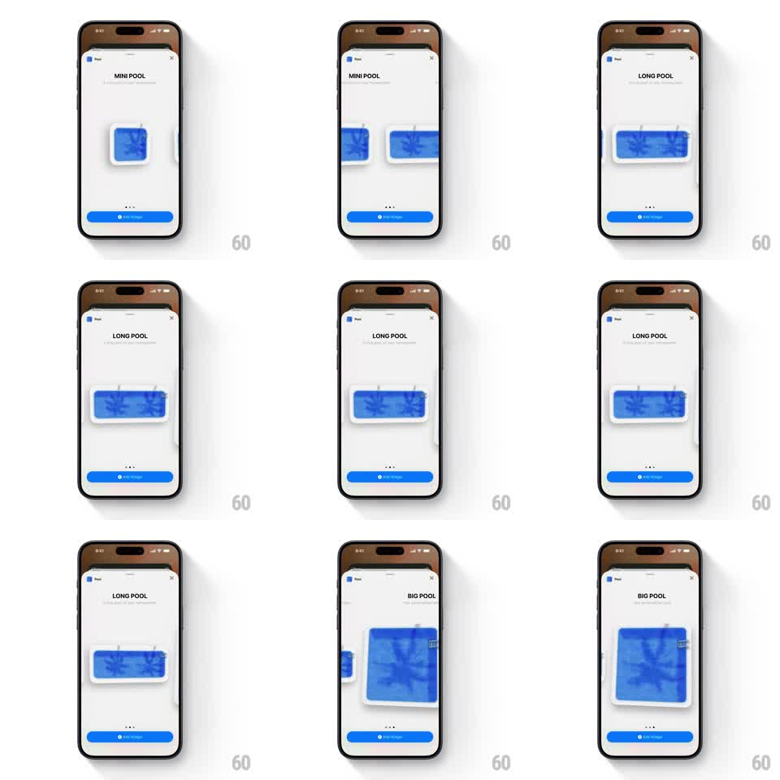

Media
Frame-by-frame

Rebuild this interaction 1:1: Pool's widget-size picker - swiping horizontally inside a bottom sheet cycles a live preview card through the three widget sizes (MINI POOL, LONG POOL, BIG POOL), with the title and pagination dots updating in sync.

Rebuild this interaction 1:1: Pool's widget-size picker - swiping horizontally inside a bottom sheet cycles a live preview card through the three widget sizes (MINI POOL, LONG POOL, BIG POOL), with the title and pagination dots updating in sync.
## Integration
Integration: stack-agnostic spec - springs given as stiffness/damping, timed motions as duration + curve; map every value to your framework and animation library of choice.
## Scene
Bottom sheet over a dimmed map: grabber, header (app glyph + "Pool", close X), a size title with subtitle ("MINI POOL" / "LONG POOL" / "BIG POOL"), a centered preview card showing the pool widget at that size, three pagination dots, and a pinned blue "Add Widget" button.
## Motion spec
Pattern: horizontal size paging with shape-morphing preview.
- The preview area tracks the finger 1:1; adjacent sizes peek in from the edges during the drag.
- On release it snaps to the nearest size (spring ~320/26, 300ms); the preview card morphs its aspect (small square -> wide rectangle -> large square) during the transition, not as a cut.
- Title swaps with a short vertical slide (old exits up 8px, new enters from below, 200ms).
- Active pagination dot fills; the transition slides the fill between dots (200ms).
- "Add Widget" and the sheet chrome stay static.
## Calibration
- The aspect morph must be continuous - the card visibly reshapes between sizes.
- Each size keeps the same pool artwork, just cropped to the widget shape.
## Reduced motion
Preview crossfades between sizes (200ms); title changes without slide.
## Don't miss
- Size order is MINI -> LONG -> BIG, left to right.
- The preview card carries a subtle shadow and rounded corners at every size.